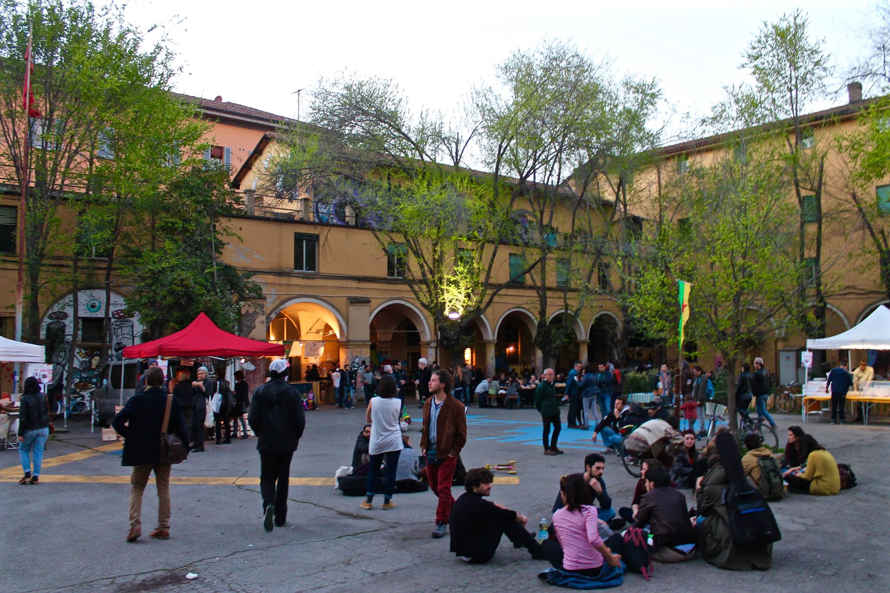

Làbas
Nel cuore di Bologna, più precisamente in via Orfeo 46, si trova l'Ex Caserma Masini, uno spazio che si estende per circa 9.000 mq.
Abbandonata a se stessa ormai da anni, il 13 novembre del 2012 è stata occupata dal collettivo politico Làbas che tutt'oggi la tiene aperta.
Nel giro di pochi anni, lo spazio occupato da Làbas è diventato un grande punto di riferimento non solo nel quartiere Santo Stefano ma in tutta la città, infatti ospita al suo interno diversi progetti politici e sociali che mirano a costruire una partecipazione dal basso, offrendo supporto a tutte quelle persone che si trovano in condizioni di disagio e mettendo al centro dei propri obiettivi il rispetto dei diritti e della dignità umana.

Tra i progetti realizzati dal collettivo Làbas, due in modo particolare interessano il fenomeno dell'emergenza abitativa che affligge la città di Bologna: lo Sportello per il diritto all'abitare e Accoglienza Degna.
Lo Sportello per il diritto all'abitare di Làbas, attualmente inattivo, è nato per offrire supporto alle persone che si trovavano in una condizione di forte disagio abitativo e che dunque avevano necessità di un tetto sotto il quale dormire o di una consulenza legale sul tema casa o sull'ottenimento dei documenti o ancora, andassero alla ricerca di una sistemazione accettabile dopo essere usciti dal Piano Freddo promosso dal Comune di Bologna.
L'attività dello Sportello per il diritto all'abitare è andata poi ad integrarsi con il progetto Accoglienza Degna, il dormitorio autogestito e inaugurato il 6 dicembre 2015.
Allestito nel giro di un mese grazie ad una raccolta fondi e alla forza di numerosi volontari, il dormitorio realizzato da Làbas all'interno dell'Ex Caserma Masini è diventato una vera e propria casa per chi ne è rimasto senza o non l'ha mai avuta, per migranti di passaggio a Bologna o per coloro che, richiedendo asilo in Italia, sono usciti dai programmi di accoglienza e di protezione per rifugiati e non hanno fissa dimora.
Il dormitorio dispone di più di 12 posti letto, servizi igienici e cucina comune e, oltre ad offrire un tetto e un pasto caldo, permette ai propri ospiti di vivere in maniera dignitosa, trovando al contempo una dimensione di convivenza confortevole in cui ciascuno è di supporto all'altro.
Lahid, ospite del dormitorio "Accoglienza Degna" racconta la sua esperienza.
Ma Làbas non è solo questo. All'interno dello spazio occupato, infatti, ogni mercoledì si svolge il mercato di Campi aperti ovvero un mercato di prodotti biologici a km zero a sostegno dell'Associazione per la sovranità alimentare, l'agricoltura biologica e i mercati contadini. Oltre al mercato, il collettivo Làbas organizza anche serate di autofinanziamento, laboratori creativi e un dopo scuola per bambini (Làbimbi).